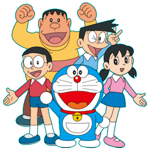

All the characters

Nobita - Doraemon's best friend
Other casual friends
Shizuka
Dekisugi
Gian
Suneo
Dorami- Doraemon's sister
Common characters
Nobisuki nobi
Sewashi Nobi
Mii chan
Nobita's teacher
Jaiko
Tamako Nobi
Links
Do you know who are charcters in Doraemon? If no click here!